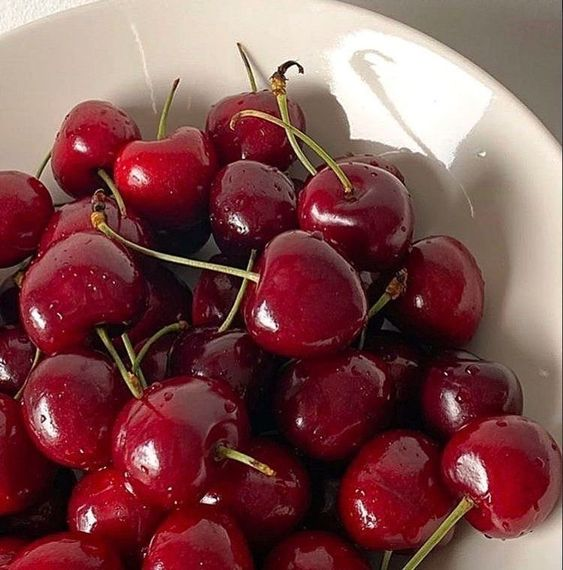
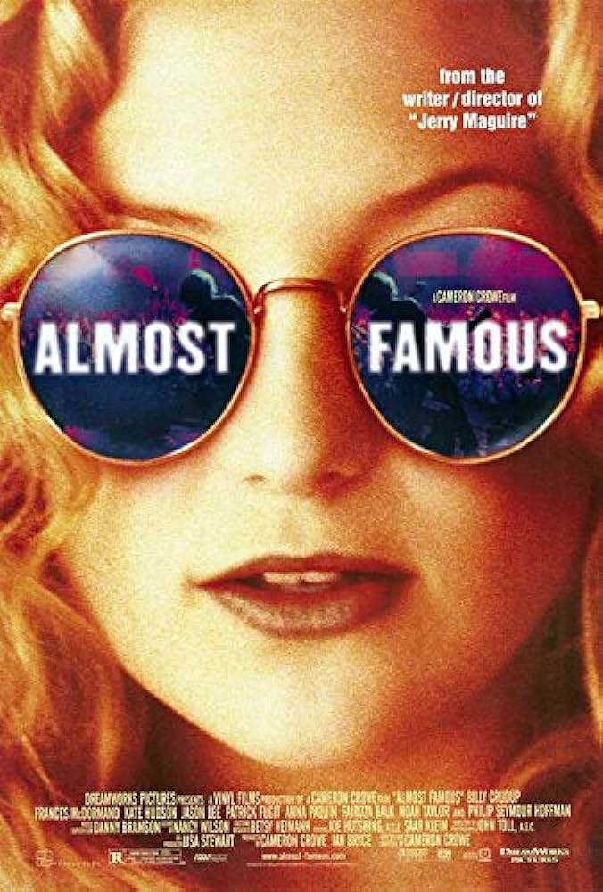

Hello! Welcome to a digital scrapbook of my favorite things!
My favorite drink is an oat milk latte with honey and cinnamon. I usually drink hot coffee, but this drink is also great iced! I was a barista for a while, and I only learned I liked this drink by experimenting behind the bar. When you have to go to work at a coffee shop at 6 in the morning, you inevitably try a lot of different coffees.

My favorite fruits are cherries of any kind. Usually, I also like cherry flavored things. I have a box of cherry rooibos tea in my pantry right now, and it is spectacular.

"Almost Famous" is one of my favorite movies, and it's probably the reason I love live music. I can quote Penny Lane's "I always tell the girls, never take it seriously. If you never take it seriously, you never get hurt. You never get hurt, you always have fun, and if you ever get lonely, just go to the record store and visit your friends" line verbatim.
I'd love to hear what your favorite things are, and if there are any stories behind them!